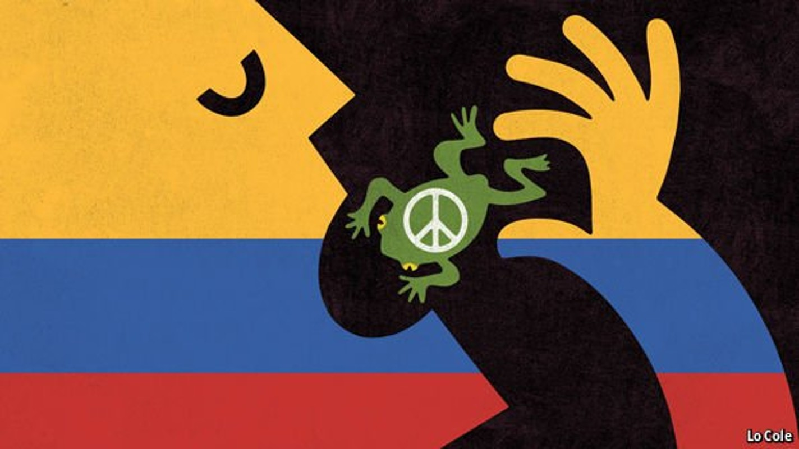
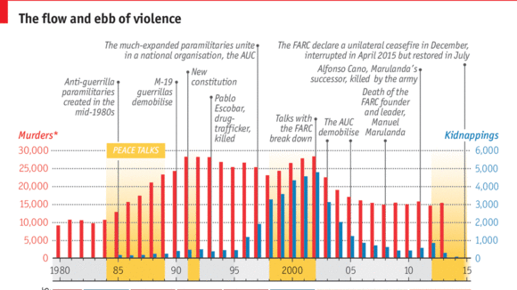

The government declares an end to its war against the FARC

IT HAS been a long time coming. After 52 years of fighting, almost four years of peace negotiations and three months after a final deadline, the Colombian state and the Marxist guerrillas of the so-called Revolutionary Armed Forces of Colombia (FARC) have agreed to a bilateral and “definitive” ceasefire. That is cause for celebration, for Colombia and for the region. But the peace deal is controversial. Putting it into practice will be tricky and it may be made harder by the unpopularity of the government of Juan Manuel Santos, Colombia’s president.
On June 23rd Mr Santos was due to fly to Havana, the site of the talks, for a ceremony with the FARC’s leader, Rodrigo Londoño (aka “Timochenko”), in the presence of Ban Ki-moon, the UN secretary-general, and five Latin American presidents. In practice, the two sides all but stopped firing a year ago, when the FARC declared a unilateral ceasefire and the government halted offensive actions. But the government’s formal declaration of a ceasefire is historic.
It is possible because the two sides have agreed on the details of the FARC’s demobilisation. This involves the group’s 6,800 troops and 8,500 militia assembling at 23 fixed points around the country. The negotiators have now reached agreement on all five of the points on their original agenda. There are still details to be resolved. Mr Santos hopes the final accord can be signed in July. In the following six months they will disarm, under international supervision. Both sides are now saying, in effect, that there is no going back. The FARC have accepted the government’s plan to ratify the peace deal in a plebiscite, perhaps in October.
For Colombians, the agreement involves “swallowing toads”, in a local metaphor. The FARC claim to have fought a just war against unequal land ownership. In that cause the country suffered bombings, firefights, murders, kidnapping and extortion. Many people find it hard to accept that FARC leaders accused of crimes against humanity will not go to jail provided they confess. But they will face a special tribunal and restrictions on their liberty for up to eight years. Many other points in the agreement involve the government saying it will do things it should do anyway, such as fostering rural development and adopting better ways to fight drug-trafficking and criminal gangs.
Álvaro Uribe, Mr Santos’s predecessor as president, has launched a campaign of “civil resistance” against the agreement, which he portrays as handing Colombia over to the FARC and “Castro-chavismo”. That is a travesty. But there are legitimate grounds for worry. Nobody knows how much money the FARC has invested from its criminal businesses. Many distrust the sincerity of the FARC’s conversion to democracy. And partly because the peace negotiations have taken so long and missed so many deadlines, Colombians have no love for Mr Santos. In a recent poll his approval rating was just 20%, lower than that of Nicolás Maduro in Venezuela.

Colombia's peace process, in charts
In the eyes of Colombians, the credibility of the agreement will turn on the integrity of the special tribunal and effective verification of disarmament. Polls suggest that in the plebiscite the agreement will probably be ratified by a margin of around two to one. Just as important will be the government’s ability to flood the areas of FARC influence with quick-starting development projects to employ the guerrilla rank and file, and to impose security, justice and effective administration. There are two further complications. A smaller guerrilla group, the ELN, shows no serious interest in peace; it may recruit FARC renegades and will have to be fought. And criminal gangs whose leaders emerged from right-wing paramilitary groups which demobilised a decade ago are growing in strength.
Unfortunately, the peace agreement comes when Colombia is facing a sharp economic adjustment. The IMF expects the economy to grow by only 2.5% this year, compared with 4.4% in 2014. To fill a hole in government revenues caused by the oil slump, Mr Santos is preparing to raise taxes later this year. His opponents bridle at the notion of paying taxes to help the FARC.
But as Mr Santos says, war is more expensive than peace. If the agreement is less than perfect it is because Mr Uribe’s military build-up—which for three years was directed by Mr Santos as defence minister—weakened the FARC but did not defeat them. That Colombia’s conflict has long been an anachronism does not make it any easier to end. Peace with the FARC will improve the lives of Colombians, especially those in remote rural areas. However late in the day, it is a big prize.
Correction:This article previously stated that the FARC will start putting their weapons “beyond use” only after a plebiscite later this year. In fact, they will disarm over the six months after the final accord is signed. Sorry.